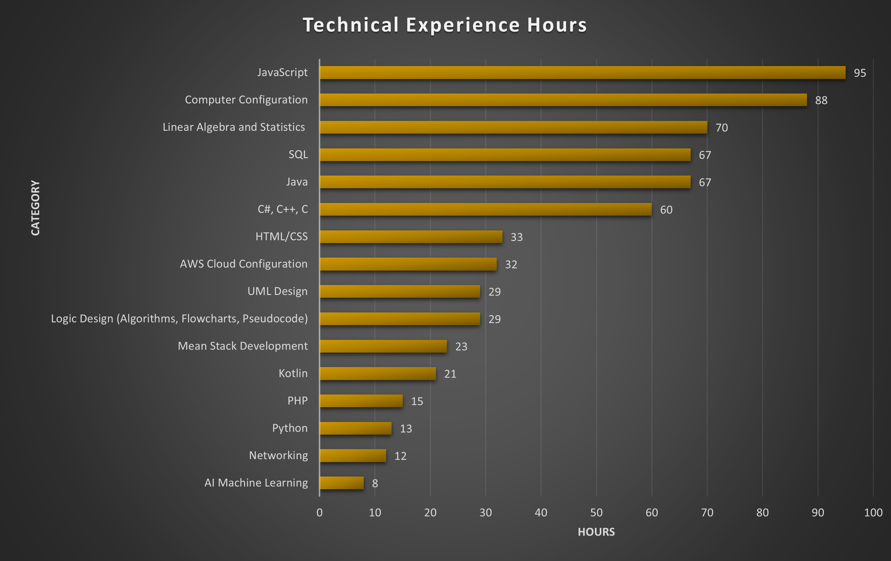
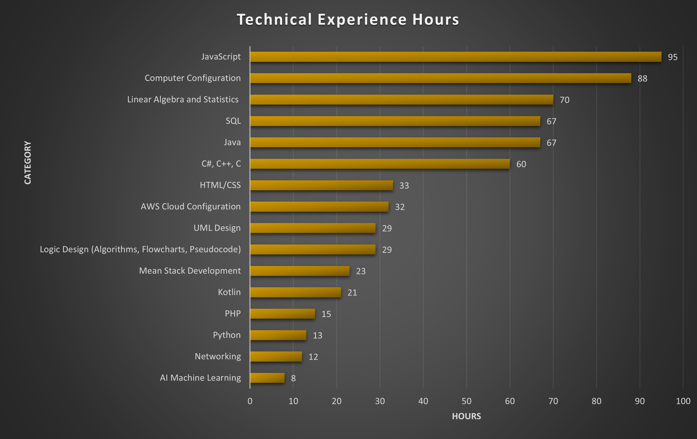

Professional Summary
I am a research associate intern at the Medical University of South Carolina. Over the past two years, I have obtained over 662 hours of technical hands-on experience in the field of IT. While my skills are diverse, I specialize in creating clean and beautiful user interfaces that run on secure and efficient back-ends. My most notable project is a picture framing application I developed that has been in daily production use for the past year and a half.
Technical Skills

Certifications
NVIDIA - Certificate of Competency, Fundamentals of Deep Learning - October 18, 2024
Education
Bachelor of Science, Software Development - ECPI University, Virginia Beach VA
Associate of Science, Business Administration - Trident Technical College, Charleston SC
Work History
MUSC - Research Associate Intern, Charleston SC
(March 2025- Current)
(March 2023- Current)
(June 2024 - September 2024)
(August 2021 - March 2023)
(July 2015 - August 2021)
Worked in commercial airlines supporting the 787 Dreamliner program for 4 years, then in research and development at Boeing Research and Technology (BR&T) for 2 years.
I am a research associate intern at the Medical University of South Carolina. Over the past two years, I have obtained over 662 hours of technical hands-on experience in the field of IT. While my skills are diverse, I specialize in creating clean and beautiful user interfaces that run on secure and efficient back-ends. My most notable project is a picture framing application I developed that has been in daily production use for the past year and a half.
Technical Skills
- Programming Languages: Java, JavaScript, C#, C++, C, Kotlin, Python
- Web Development: HTML/CSS, PHP, MEAN/MERN Stack Development
- Database Management: SQL, Microsoft Access
- Cloud Computing: AWS Cloud
- Computer Configuration: Hardware and Software, OS(Mac, Linux, Windows), Networking
- Mathematical/Analytical Skills: AI/Machine Learning, Linear Algebra and Statistics
- Design & Logic: Logic Design (Algorithms, Flowcharts, Pseudocode), UML Design, UI/UX Design for Mobile Applications

Certifications
NVIDIA - Certificate of Competency, Fundamentals of Deep Learning - October 18, 2024
Education
Bachelor of Science, Software Development - ECPI University, Virginia Beach VA
- ( Expected in November 2025 )
- Notable Achievements:
- ✨ 4.0 Cumulative GPA
- ✨ Dean's List - 2024
- ✨ Student of the Week - December 2024
Associate of Science, Business Administration - Trident Technical College, Charleston SC
Work History
MUSC - Research Associate Intern, Charleston SC
(March 2025- Current)
- Notable Projects:
- ✨ Coded a Docx/PDF API module to output user-friendly patient medical summaries.
- ✨ Writing Python scripts to automate database management.
- Technologies Used:
- JavaScript, Python
- Doc.JS, Node.JS, Express.js, Microsoft Access Database, GitHub
- Daily Requirements:
- Communicate with colleagues in weekly technical meetings on current project status, bug fixes, and help needed.
- Consult documentation and conduct research to solve problems and drive solutions.
- Conduct bug fixes for known errors in code.
- Read and review code and make changes as necessary.
(March 2023- Current)
- Notable Projects:
- ✨ Developed an Android App for the shop tablets using Java, Kotlin, and XML in Android Studio.
- Daily Requirements:
- Assemble high-quality custom frames using appropriate techniques, such as joining corners securely and mounting artwork professionally.
- Deliver exceptional customer service by promptly addressing inquiries, concerns, and complaints.
- Maintain a clean and organized workspace, ensuring efficient work processes and high-quality results.
- Ensure consistent quality control by inspecting completed frames for accuracy before presenting them to customers for approval or pickup.
(June 2024 - September 2024)
- Daily Requirements:
- Verified batch records against actual materials used and resolves variances using Microsoft Dynamics NAV.
- Conducted root cause analyses for discrepancies in inventory records, implementing corrective actions as needed.
- Completed physical inventory counts each month.
- Maintained storage areas for smooth department operations and FDA compliance.
(August 2021 - March 2023)
- Technologies Used:
- Adobe Illustrator, Adobe Photoshop, Procreate
- Daily Requirements:
- Developed creative design for print materials, brochures, banners, and signs.
- Created engaging social media graphics that drove user engagement and increased online visibility.
- Conceptualized unique logo designs for startups, establishing strong visual identities that resonated with target markets.
- Created digital image files for use in digital and traditional printing methods.
(July 2015 - August 2021)
Worked in commercial airlines supporting the 787 Dreamliner program for 4 years, then in research and development at Boeing Research and Technology (BR&T) for 2 years.
- Notable Projects:
- ✨ Implemented a safety attachment to make electric forklift charging safer, reducing injuries and equipment damage
- ✨ Worked a 12 month special project in 5S Lean Manufacturing that was adopted site-wide
- Technologies Used:
- ARES, BESSY, Cribmaster, ERPLN, HazTrax, KITS, Order Manager, SAT, SRIT
- Certifications Obtained:
- Forklift ( Internal Combustion < 15k, Internal Combustion > 30k, Electric < 15k)
- HazMat ( 49 CFR DOT Hazmat Certification )
- Daily Requirements:
- Coordinated with production teams to support productivity targets and deadline management.
- Coordinated communication between departments, fostering a collaborative work environment.
- Managed daily operations on the production floor, maintaining a safe and organized workspace.
- Supported continuous improvement initiatives by identifying areas for process optimization using data analysis tools and visuals.
- Prepared orders for shipment, posting weights and shipping charges onto packaging, marking materials with identifying information and updating logs of shipments outgoing and incoming.
- Worked according to operating procedures and FAA regulations
- Collected and disposed of hazardous waste produced in research laboratories across the site.
- Safely loaded and unloaded trucks using appropriate forklift attachments, reducing the risk of accidents or injuries.